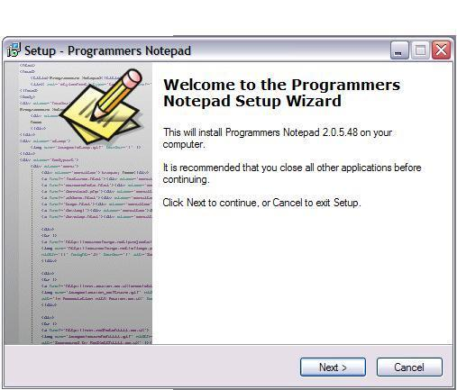
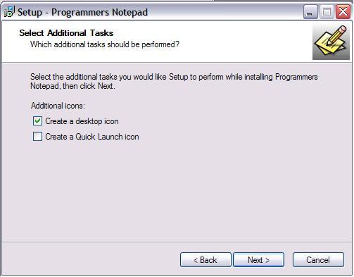
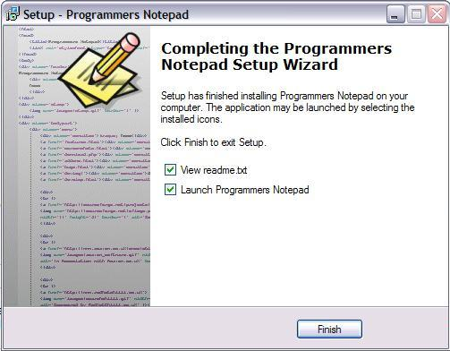

|
Taller de Robótica Básico - Skybot v1.4. - SESION 3 - Windows. Programmer Notepad |
En este capítulo Instalaremos y configuraremos el editor Programmers Notepad. Este editor tiene licencia BSD *.
Para la instalación de dicho software necesitaremos descargarlo de la página http://sourceforge.net/projects/pnotepad/
Una vez allí nos descargaremos la versión más actual del programa. En nuestro caso ha sido esta versión PN-DEVEL 2.0.5.48
Para comenzar la instalación ejecutaremos el archivo PN2054.EXE, desde la ubiación donde lo hayais descargado, con lo que se nos abrirá la siguiente ventana:

Pulsamos el botón next y nos aparece la siguiente ventana:
Pinchamos en la opcion “I accept the agreement” y pulsamos “Next”. Y esta es la ventana siguiente:

Volvemos a Pulsar “Next” .

Ahora decidimos en que ruta podemos instalar el programa. Si queremos cambiar la que figura por defecto, pulsaremos en el botón “Browse” y elegiremos la ruta alternativa de instalación. Nosotros hemos dejado la que viene por defecto. Lo que nos lleva a la ventana, tras pulsar “Next”.

Ahora podemos elegir el nombre con el que el programa de instalación nombrará el grupo de programas del editor. Nosotros dejamos el que viene por defecto, y pulsaremos ”Next”.

Podemos elegir si queremos crear un icono en el escritorio, con la primera opción y si también queremos un icono en la barra de tareas con la segunda. Una vez elegidas al menos la primera, pulsamos “Next”.

Con esta ventana comprobamos los parametros de instalación. Una vez que veamos que todo está correcto pulsamos “Install”.

Con esto hemos finalizado la instalación. Si dejamos marcadas las opciones “View Readme.txt” Nos abrirá el archivo de texto de referencia sobe la aplicación. Si mantenemos la segunda opción ”Launch Programmers Notepad” se abrirá el programa tras pulsar el botón “Finish”.